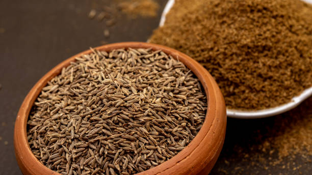

Sesame is a versatile crop grown mainly in warm seasons, with significant production and market share in states like Gujarat, Uttar Pradesh, and Madhya Pradesh. It thrives in well-drained sandy loam to loamy soils with a neutral pH.Slightly acidic to neutral pH (5.5 to 7.5) is preferred.The crop requires around 90-120 days to mature, and resource needs include proper land preparation, moderate irrigation, and balanced fertilization.Sesame seeds are a nutrient-dense food offering numerous health benefits due to their rich content of proteins, healthy fats, vitamins, and minerals. They can be easily incorporated into various dishes to enhance both flavor and nutritional value.
It contains vitamins like B1, B2, B3, B6, E.
तिल मुख्य रूप से गर्म मौसम में उगाई जाने वाली एक बहुमुखी फसल है, जिसका गुजरात, उत्तर प्रदेश और मध्य प्रदेश जैसे राज्यों में महत्वपूर्ण उत्पादन और बाजार हिस्सेदारी है। यह तटस्थ पीएच के साथ अच्छी तरह से सूखा रेतीले दोमट से दोमट मिट्टी में पनपता है। थोड़ा अम्लीय से तटस्थ पीएच (5.5 से 7.5) को प्राथमिकता दी जाती है। फसल को परिपक्व होने के लिए लगभग 90-120 दिनों की आवश्यकता होती है, और संसाधन आवश्यकताओं में उचित भूमि की तैयारी, मध्यम सिंचाई शामिल है। , और संतुलित निषेचन। तिल के बीज एक पोषक तत्व-सघन भोजन है जो प्रोटीन, स्वस्थ वसा, विटामिन और खनिजों की समृद्ध सामग्री के कारण कई स्वास्थ्य लाभ प्रदान करता है। स्वाद और पोषण मूल्य दोनों को बढ़ाने के लिए इन्हें विभिन्न व्यंजनों में आसानी से शामिल किया जा सकता है।
इसमें बी1, बी2, बी3, बी6, ई जैसे विटामिन होते हैं।
6. CUMIN / 6.जीरा

Cumin (Cuminum cyminum) is typically grown as a winter crop in regions with dry, mild climates.Cumin is sown in the Rabi season (October-November) and harvested in the spring (February-April).
India is the largest producer and consumer of cumin in the world. The major cumin-producing states in India are:
Gujarat, Highest producer of cumin seeds, Rajasthan is known for its Significant production.Sandy loam to loamy soils are ideal.Slightly acidic to neutral pH (6.8 to 8.3) is preferred.The crop duration for cumin varies from 100 to 120 days depending on the variety and growing conditions.Cumin is a drought-tolerant crop and requires minimal irrigation. However, 2-3 irrigations during critical growth stages (flowering and seed formation) can enhance yields.Cumin seeds are a nutrient-dense spice offering numerous health benefits due to their rich content of proteins, healthy fats, vitamins, and minerals. They can be easily incorporated into various dishes to enhance both flavor and nutritional value.
It contains vitamins A, C, E, B6.
भारत दुनिया में जीरे का सबसे बड़ा उत्पादक और उपभोक्ता है। भारत में प्रमुख जीरा उत्पादक राज्य हैं:
गुजरात, जीरा का सबसे बड़ा उत्पादक, राजस्थान अपने महत्वपूर्ण उत्पादन के लिए जाना जाता है। रेतीली दोमट से दोमट मिट्टी आदर्श होती है। थोड़ा अम्लीय से तटस्थ पीएच (6.8 से 8.3) को प्राथमिकता दी जाती है। जीरे की फसल की अवधि 100 से 120 दिनों तक भिन्न होती है, जो निर्भर करती है विविधता और बढ़ती स्थितियाँ। जीरा एक सूखा-सहिष्णु फसल है और इसे न्यूनतम सिंचाई की आवश्यकता होती है। हालाँकि, महत्वपूर्ण विकास चरणों (फूल और बीज निर्माण) के दौरान 2-3 सिंचाई से पैदावार बढ़ सकती है। जीरा एक पोषक तत्वों से भरपूर मसाला है जो प्रोटीन, स्वस्थ वसा, विटामिन और खनिजों की समृद्ध सामग्री के कारण कई स्वास्थ्य लाभ प्रदान करता है। स्वाद और पोषण मूल्य दोनों को बढ़ाने के लिए इन्हें विभिन्न व्यंजनों में आसानी से शामिल किया जा सकता है।
इसमें विटामिन ए, सी, ई, बी 6 होता है।
7. FENUGREEK / 7.मेंथी
Fenugreek is a winter crop predominantly grown in the Rabi season in India, with Rajasthan, Gujarat, and Madhya Pradesh being the major producers and market areas. It thrives in well-drained loamy to sandy loam soils with a neutral pH. The crop requires around 90-110 days to mature, and resource needs include proper land preparation, moderate irrigation, and balanced fertilization. Fenugreek requires moderate irrigation. Typically, 3-4 irrigations are sufficient during the growing period.Regular monitoring and control of pests like aphids and cutworms. Weed control through manual weeding or herbicides is also necessary.
Fenugreek seeds are a nutrient-dense spice offering numerous health benefits due to their rich content of proteins, fibers, vitamins, and minerals. They can be easily incorporated into various dishes to enhance both flavor and nutritional value. It contains vitamins A, C, E, K, B6.
मेथी एक शीतकालीन फसल है जो भारत में मुख्य रूप से रबी मौसम में उगाई जाती है, जिसमें राजस्थान, गुजरात और मध्य प्रदेश प्रमुख उत्पादक और बाजार क्षेत्र हैं। यह तटस्थ पीएच वाली अच्छी जल निकासी वाली दोमट से लेकर रेतीली दोमट मिट्टी में पनपता है। फसल को पकने के लिए लगभग 90-110 दिनों की आवश्यकता होती है, और संसाधन आवश्यकताओं में उचित भूमि की तैयारी, मध्यम सिंचाई और संतुलित उर्वरक शामिल हैं। मेथी को मध्यम सिंचाई की आवश्यकता होती है। आमतौर पर, बढ़ती अवधि के दौरान 3-4 सिंचाई पर्याप्त होती है। एफिड्स और कटवर्म जैसे कीटों की नियमित निगरानी और नियंत्रण। हाथ से निराई-गुड़ाई या शाकनाशी द्वारा खरपतवार नियंत्रण भी आवश्यक है।
मेथी के बीज एक पोषक तत्व से भरपूर मसाला है जो प्रोटीन, फाइबर, विटामिन और खनिजों की समृद्ध सामग्री के कारण कई स्वास्थ्य लाभ प्रदान करता है। स्वाद और पोषण मूल्य दोनों को बढ़ाने के लिए इन्हें विभिन्न व्यंजनों में आसानी से शामिल किया जा सकता है। इसमें विटामिन ए, सी, ई, के, बी 6 होते हैं।
8. PSYLLIUM HUSK / 8.सैलियम भूसी


Psyllium husk (Plantago ovata), also known as Isabgol, is typically grown as a winter crop. Psyllium is sown during the Rabi season (October-November) and harvested in late winter to early spring (February-April).grown mainly in Gujarat, Rajasthan, and Madhya Pradesh, requiring well-drained sandy loam to loamy soils. The crop takes about 100-120 days to mature and requires minimal resources for cultivation. and resource needs include proper land preparation, minimal irrigation, and balanced fertilization.It contains vitamins A, C, B6, K, E.
साइलियम भूसी (प्लांटागो ओवाटा), जिसे इसबगोल के नाम से भी जाना जाता है, आमतौर पर सर्दियों की फसल के रूप में उगाई जाती है। साइलियम को रबी सीज़न (अक्टूबर-नवंबर) के दौरान बोया जाता है और सर्दियों के अंत से शुरुआती वसंत (फरवरी-अप्रैल) में काटा जाता है। मुख्य रूप से गुजरात, राजस्थान और मध्य प्रदेश में उगाया जाता है, जिसके लिए अच्छी जल निकासी वाली रेतीली दोमट से लेकर दोमट मिट्टी की आवश्यकता होती है। फसल को पकने में लगभग 100-120 दिन लगते हैं और खेती के लिए न्यूनतम संसाधनों की आवश्यकता होती है। और संसाधन आवश्यकताओं में उचित भूमि की तैयारी, न्यूनतम सिंचाई और संतुलित उर्वरक शामिल हैं। इसमें विटामिन ए, सी, बी 6, के, ई शामिल हैं।
9. SAFFLOWER / 9.कुसुम

Safflower (Carthamus tinctorius) is typically grown as a winter crop in regions with mild climates.Safflower is sown during the Rabi season (October-November) and harvested in late winter to early spring (February-April). India is a significant producer of safflower, primarily grown for its oilseed. The major safflower-producing states in India are Maharashtra, Karnataka, AndhraPradesh, Madhyapradesh.
Loamy to clay loam soils are ideal.Slightly alkaline to neutral pH (6.5 to 8.0) is preferred.
Good drainage is crucial as safflower is moderately tolerant to drought but sensitive to waterlogging.Requires plowing and harrowing to ensure a fine seedbed.Safflower requires minimal irrigation. Typically, 2-3 irrigations are sufficient during the growing period, especially at critical stages like flowering and seed filling.Basal application of 40-50 kg Nitrogen (N), 20-25 kg Phosphorus (P), and 20-25 kg Potassium (K) per hectare is generally recommended.Regular monitoring and control of pests like aphids and bollworms. Weed control through manual weeding or herbicides is also necessary.
The crop duration for safflower varies from 110 to 140 days depending on the variety and growing conditions.It contains vitamins E, K, B6.
कुसुम (कार्थमस टिनक्टोरियस) आमतौर पर हल्के जलवायु वाले क्षेत्रों में सर्दियों की फसल के रूप में उगाया जाता है। कुसुम को रबी मौसम (अक्टूबर-नवंबर) के दौरान बोया जाता है और सर्दियों के अंत से शुरुआती वसंत (फरवरी-अप्रैल) में काटा जाता है। भारत कुसुम का एक महत्वपूर्ण उत्पादक है, जो मुख्य रूप से तिलहन के लिए उगाया जाता है। भारत में प्रमुख कुसुम उत्पादक राज्य महाराष्ट्र, कर्नाटक, आंध्र प्रदेश, मध्य प्रदेश हैं।
दोमट से चिकनी दोमट मिट्टी आदर्श होती है। थोड़ी क्षारीय से तटस्थ पीएच (6.5 से 8.0) को प्राथमिकता दी जाती है।
अच्छी जल निकासी महत्वपूर्ण है क्योंकि कुसुम सूखे के प्रति मध्यम रूप से सहनशील है लेकिन जलभराव के प्रति संवेदनशील है। अच्छी बीजभूमि सुनिश्चित करने के लिए जुताई और हैरोइंग की आवश्यकता होती है। कुसुम को न्यूनतम सिंचाई की आवश्यकता होती है। आमतौर पर, बढ़ती अवधि के दौरान 2-3 सिंचाईयां पर्याप्त होती हैं, खासकर फूल आने और बीज भरने जैसे महत्वपूर्ण चरणों में। 40-50 किलोग्राम नाइट्रोजन (एन), 20-25 किलोग्राम फास्फोरस (पी), और 20-25 किलोग्राम पोटेशियम का बेसल अनुप्रयोग। (के) प्रति हेक्टेयर आमतौर पर अनुशंसित है। एफिड्स और बॉलवर्म जैसे कीटों की नियमित निगरानी और नियंत्रण। हाथ से निराई-गुड़ाई या शाकनाशी द्वारा खरपतवार नियंत्रण भी आवश्यक है।
कुसुम की फसल की अवधि विविधता और बढ़ती परिस्थितियों के आधार पर 110 से 140 दिनों तक होती है। इसमें विटामिन ई, के, बी 6 होते हैं।